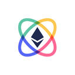
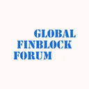
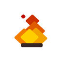

 ETHGlobal ETHGlobal 利用团队组织 ETHWaterloo、Hack the North 的经验，培养世界级的以太坊开发商与企业家生态系统，共同构建 Web 3.0 世界
Fellowship of Ethereum Magicians 由 Jamie Pitts 发起的以太坊魔法师协会组织，是自发的以太坊小型社区，旨在最大限度地提升技术可能、分享想法，跨越国家、组织和其他界限，彼此有效合作
 FinBlock Summit FinBlock Summit 在旧金山湾区举办，重点关注区块链技术与金融结合的部分，汇集世界各地的区块链与金融行业的世界级风险资本家、企业家、行业专业人士、孵化器、媒体平台与监管专...
 FireStack Lab FireStack Lab 是一个区块链技术社区，专注于区块链的开发工具和开发服务，持续关注 Zilliqa 的发展，并切实为其生态做出了多种尝试及贡献，包括技术文档翻译、钱包开发、区块链浏...
Cardano Roadmap Cardano 指导路线图发展的三个原则是：第一，社区的发展及其需求；第二，一个符合 Satoshi 原始愿景的分布式、可扩展网络；第三，平衡研发的步伐，科学严谨的应用与商业优势并行
Crypto Invest Summit Crypto Invest Summit 侧重于区块链技术的可持续投资，由世界上一些最重要的创新者、变革者和区块链和加密生态系统中的杰出领导者提出，独家策划、高影响力、信息丰富且发人深省的...
Crypto Valley Conference Crypto Valley Conference 是世界上唯一获得IEEE认证的区块链技术会议，汇集了领先的学者、初创公司、知名企业，共同探讨区块链技术的最新发展